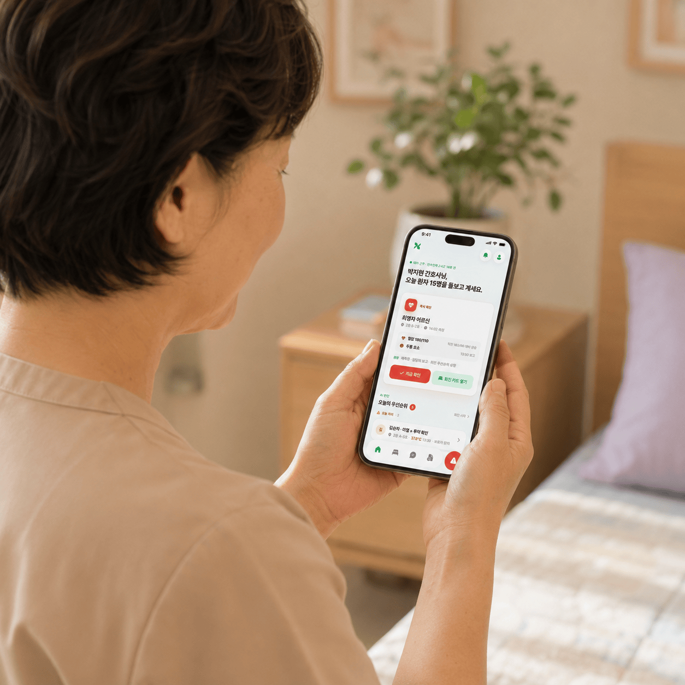
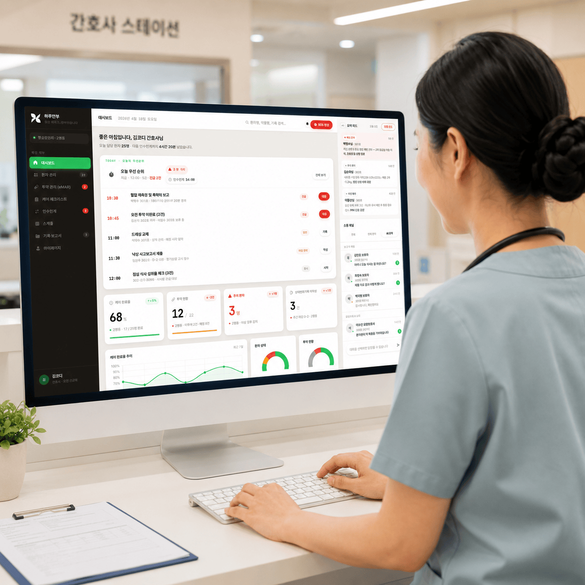

10:15
다음까지 46분
박영자 어르신 · 혈압 측정
2층 A-3호
측정 가능 · 혈압약 08:00 복용 후 2시간 경과AI 나레이션 투어로 보시겠어요?
음성 나레이션과 함께 화면이 자동으로 흐르며,
하루안부를 처음부터 끝까지 안내합니다.
화면은 자동으로 흐르고,
엔터키를 누르면 다음으로 넘어가요.
환자 · 케어팀 · 보호자, 흩어진 세 시선을
하루의 안부 한 줄로 잇는 케어 플랫폼.
하루안부는 환자 · 케어팀 · 보호자, 요양 현장의 세 시선을
다섯 개의 화면으로 연결하는 케어 커뮤니케이션 플랫폼입니다.
환자의 하루 기록은 케어팀(요양보호사·의료진)의 확인을 거쳐
보호자에게 자동으로 공유됩니다. 긴급 SOS부터 복약 확인, 일상 안부,
방문 케어 기록까지, 한 번의 기록이 역할에 맞는 사람에게 정확히 전달됩니다.
잘 계십니다.
아마도?
부모님 안부는, 매일 아침 가장 무거운 질문입니다.
보호자·케어팀·어르신, 세 사람의 하루는 서로 다른 언어로 흩어집니다.
전화 한 통으로는, 그 누구도 진짜로 안심할 수 없습니다.
고령화사회(7%)에서 초고령사회(20%)까지, 프랑스 154년, 미국 88년, 한국 24년. 65세 이상 1인 가구 214만 명, OECD 노인 빈곤율 1위. 돌봄 수요는 폭발하는데, 가족과 의료진이 연결되는 방식은 여전히 전화 한 통에 머물러 있습니다.
출처: 통계청 2024 · OECD
보호자는 부모님의 하루가 궁금하고, 어르신은 자식 걱정을 덜고 싶고, 케어팀은 같은 설명을 매번 반복합니다. 같은 하루를 함께 걱정하지만, 그 마음은 서로에게 닿지 못한 채 매일 따로 흩어집니다.
 보호자
보호자오늘 밥은 잘 드셨는지 모르겠어요.
보호자 전화에 하루 두 시간을 써요.
 환자
환자자식들 걱정시키고 싶지 않아요.
 의료진
의료진어르신 상태를 매번 따로 기록해요.
보호자멀리 있어서 자주 가보지도 못해요.
목업이 아니라, 실제로 하루안부를 쓰는 사람들의 장면입니다. 멀리 있는 가족과 어르신, 그리고 케어팀이 하나의 흐름 위에서 어떻게 이어지는지를 담았습니다. 매일의 안부가 어떻게 오가고, 한 사람의 하루가 어떻게 모두에게 닿는지 — 화면 너머의 진짜 순간을 영상 한 편으로 보여드립니다.

환자·케어팀·보호자. 세 시선은 같은 사람을 바라보지만, 서로 다른 언어로 말합니다. 하루안부는 그 간극을 하루 한 줄로 닫습니다. 어제의 흐름이 오늘 아침의 안심으로 이어지게 만듭니다.

하루 한 줄 리포트로, 오늘도 잘 계신지 바로 압니다.
큰 글씨, 쉬운 터치. 안부를 전하는 건 한 번이면 충분합니다.
케어의 손길이 그대로 하루의 안부가 되어 전해집니다.
개별 앱이 아니라, 하루안부 전체가 약속하는 능력입니다. 어떤 화면을 열어도 이 여섯이 함께 작동하고, 보호자·요양보호사·의료진·환자가 같은 흐름 위에서 만납니다. 여섯 기능 모두 같은 데이터를 각자의 언어로 풀어내며, 한 사람의 하루를 끊김 없이 이어줍니다.
식사·복약·수면·활동 기록을 AI가 0~100점으로 응축. 보호자는 5초 안에 어제를 판단합니다.
하루의 케어 기록을 매일 아침 보호자 카드로 자동 변환·발송. 전화 없이도 어제가 보입니다.
SOS부터 요양보호사·의료진·보호자 알림까지, 평균 3분 안에 자동 연결.
평소와 다른 신호를 AI가 사전에 잡아 케어팀에 선제 알림. 예방형 케어로 옮겨갑니다.
같은 데이터가 환자·케어팀·보호자에게 각자의 언어로 닿습니다. 한 번의 기록이 세 사람에게.
요양보호사의 말 인계를 AI가 핵심 사항으로 자동 정리. 기록에 손이 묶이지 않습니다.
수면·식사·복약·기분, 흩어진 신호가 AI 한 카드로 응축됩니다. 보호자는 출근길에 5초면 어제의 부모님을 그려보고, 사진과 코멘트가 함께 닿아 멀리 있어도 가까이가 됩니다.

요양보호사가 체크리스트를 누르는 그 손짓이, 의료진의 확인을 거쳐 보호자 화면의 한 카드로 닿습니다. 전화 한 통, 메모 한 줄 없이도 어제의 부모님이 보이고, 세 시점이 같은 데이터 위에서 실시간으로 만납니다.

의료진 웹의 전체 환자 뷰와, 회진 중 폰으로 받는 SOS·바이탈이 같은 데이터 위에서 함께 작동합니다. 데스크의 한 화면이 병동의 흐름을 받아내고, 회진 중에는 손 안에서 즉시 처치와 인계가 이어집니다. 행정 시간을 줄여, 현장 시간을 늘립니다.
보호자 · 환자 · 요양보호사 · 의료진 앱 · 의료진 웹 — 다섯 시점의 화면이 여기 그대로 살아 있습니다. 눈으로만 보지 말고 직접 탭하고 넘겨보세요. 같은 데이터가 역할마다 어떻게 다르게 닿는지, 손끝으로 확인할 수 있습니다.
AI가 전날의 케어 데이터를 모아 수면·투약·식사·기분을 한 카드로 정리합니다. 현장의 목소리는 사진과 코멘트로 함께 전해져, 멀리 있어도 가까이 있는 안심이 됩니다. 보호자는 출근길에 5초면 어제의 부모님을 봅니다.
화면 3개, 글자는 크게, 터치는 넓게. 누구나 5초 안에 SOS를 누를 수 있고, 약·식사·재활 알림도 큰 한 줄로 차분히 안내됩니다. 첫날부터 손이 머뭇거리지 않는 화면이 우리의 출발점입니다.
 11" - Silver - Landscape.png)

오전 근무 진행률, 다음 케어까지 남은 시간, 가장 먼저 봐야 할 우선 환자까지 한 화면에 모았습니다. 출근하자마자 알아야 할 정보가 위에서부터 차례로 보여, 따로 찾을 필요가 없습니다. 오늘 하루의 흐름을 한눈에 잡고 시작합니다.
2층 A-3호
측정 가능 · 혈압약 08:00 복용 후 2시간 경과
SOS가 울리면 2초 안에 환자의 위치와 바이탈이 잡힙니다. 회진 중 처치·인계 기록은 한 손으로 끝나고, 데스크와 모바일이 같은 데이터 위에서 움직여 흐름이 끊기지 않습니다. 병동을 걸으며 기록이 완성됩니다.
AI가 이상 신호를 중요도 순으로 정렬해, 가장 먼저 봐야 할 환자를 가장 먼저 보여줍니다. 행정 작업에 묶였던 시간은 회진과 현장 판단으로 돌아가고, 데스크의 한 화면이 전체 병동의 흐름을 받아냅니다.
보호자와 환자, 그리고 곁을 지키는 케어팀. 하루안부가 닿는 자리에 남는 표정들입니다.




매일 잊지 않고 안부를 묻는 마음, 그 마음을 한 화면 위로 옮겨 적은 것이 곧 하루안부입니다. 어제의 흐름이 오늘의 안심으로 이어지도록, 세 시선이 같은 하루 안에서 만납니다.